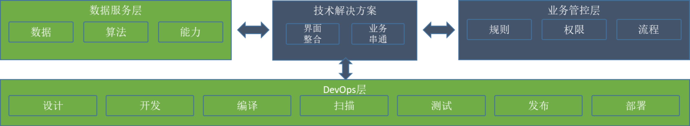

工具架构
综上所述，我们需要考虑新的软件工程范式，而这样的范式需要研发工具的基础能力支撑。在老架构上修修补补将无济于事，我们需要推进的工作，可以称之为：研发工具的数字化转型。要实现这样的转型，首先需要做的，就是从整体上思考整个研发工具的架构。而不再是像过去那样，始终在手忙脚乱的拼合一堆工具，却无法得到一个有机的整体。
下图是我设想的一个企业级的研发工具整体架构，以下将一一解说。

1. 作业面（DevOps层）
根基还是现在的DevOps，我们已经有了很多“散装”的工具，并且一直在努力将这些工具集成起来。但是，基于历史原因，以及上面提到的开放性架构带来的固有的困难，这样的集成一直都走得跌跌撞撞的。
一致性：这是工具集成首先需要追求的，但是也一直是最难的。例如组织结构与用户设置的一致性，针对资源与操作权限的一致性，还有使用体验的一致性。只有基于稳定一致的架构，我们才能够设计出真正有价值的开放性，否则就是一团乱麻。
开放性：说到底，工具开放性无非还是API+Plugin，但是，是否能够对现有架构进行重构，把一个一个的组件、微服务整理出来，清清爽爽的放在那里供调用？是否能够将插件开发指南的相关文档提供出来，简明易懂？这些才是做到开放性所需要的细致功夫。
总体而言，开放性与一致性是一体两面的架构目标，只有一致的开放性，才是好的开放性，也只有开放的一致性，才是好的一致性。
2. 管控面（业务管控层）
统一管控：从现有的DevOps业务中，将各种管控的工作剥离出来，统一集中到管控面。这需要对原有的个各种工具进行改造：封锁界面入口，提供API操作。然后提供新的、统一的操作入口，同时也能保障一致的管控体验。
基于Policy配置：管控层面需要统一考虑的问题之一，就是不断变化的规则、流程与规范，我们可以统一称之为“Policy”，而且我们在架构设计时，就需要考虑将具体功能与变化的规则分离，无论是添加新的审批环节、变更审批顺序、还是加入一些自动化的检查点，都应该是可以配置的。
可追溯：这也是需要统一考虑的管控需求。因为所有的管控操作，都应该被记录下来，是谁、在什么地方，执行何种操作，得到什么结果？以及：这个操作的上一个环节与下一个环节分别是什么？只有在一个集中管控的平台上，这样的记录才会容易做到。
管控面的最核心的目标就是一个：将整个研发工具平台，当做一个工具来管控。
3. 数据面（数据服务层）
数据面的建设，当然是整个研发工具数字化转型的核心，但也是难度最大的部分。
标准化：除非我们能够为元数据制定一套标准，否则哪怕是数据统一存放在一个数据湖里，也不过是一盘散沙。
推送与拉取：无论是工具主动推送，还是数据中心定时拉取，统一存放到一个地方是我们首先应该达到的第一个目标。甚至比标准化更加优先，可以先放到一起，再慢慢整理。真正的难题在于：如何保证无所遗漏，应收尽收。
数据面的主要目标，就是：保值增值。在一个结构良好的数据集基础上，自动化、智能化、可追溯都可以实现的目标。
4. 解决方案层
解决方案层，是一个不得不存在的层，因为有很多琐碎的事务，放在哪个模块都不合适，又同时需要与各个模块打交道。
比如：为了防止开源软件被投毒，我们需要建设一种拦截的能力，那么首先需要有一个“扫描恶意软件”的模块。其次，这个扫描能力需要集成到开源软件引入的流程之中，因此涉及到对于管控流程的改造。再次，我们还需要定期升级我们的恶意软件特征库，并且对已经引入的软件进行定期扫描，以防遗漏。最后，如果在某个环节发现了恶意软件，我们还需要启动治理流程，及时处理。